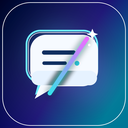

QudadFlow TranslatorDOCUMENT READERQudadFlow TranslatorDOCUMENT READER
QudadFlow TranslatorDOCUMENT READERQudadFlow TranslatorDOCUMENT READER文件在浏览器内解析；点击翻译后，仅将文字发送到你配置的 API。

READ SIDE BY SIDE
把 PDF 或文档拖到这里，或选择本地文件。
也可以从浏览器正在查看的 PDF 转入此阅读器。
PDF / DOCX / TXT / Markdown · 最大 25 MB
PDF 按页对照；Word 与文本按段落阅读排版。扫描图片需先进行 OCR。